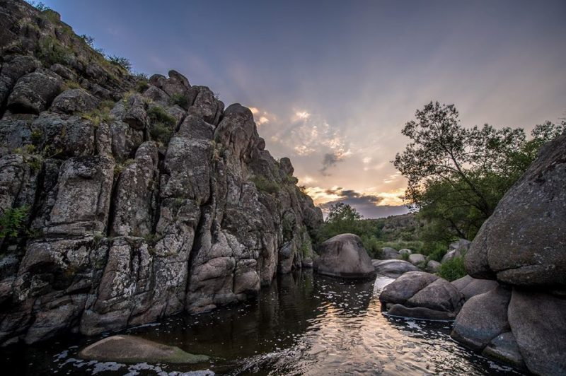
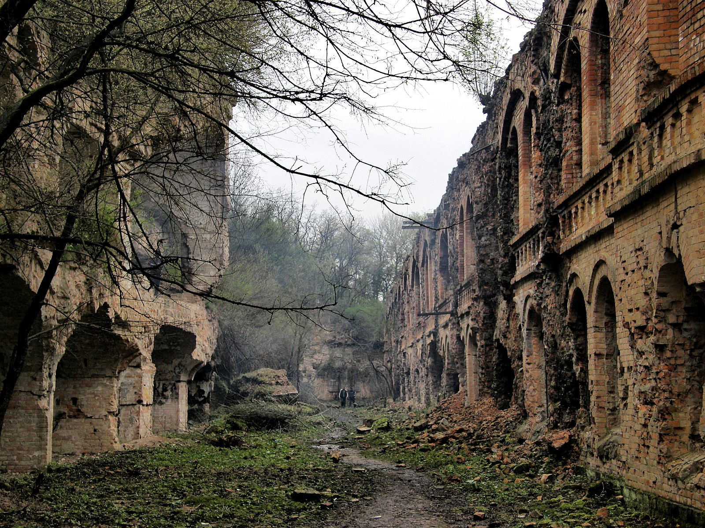
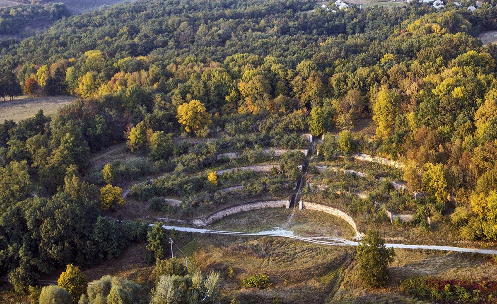
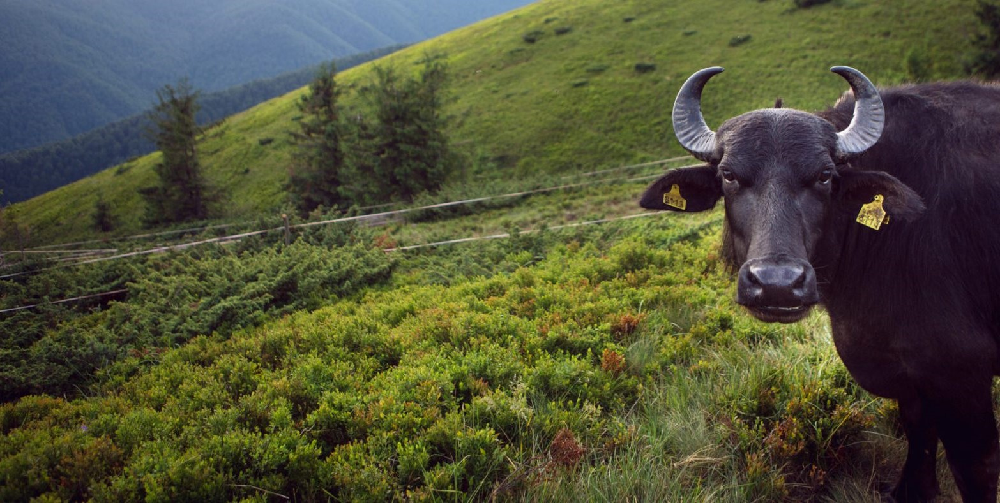
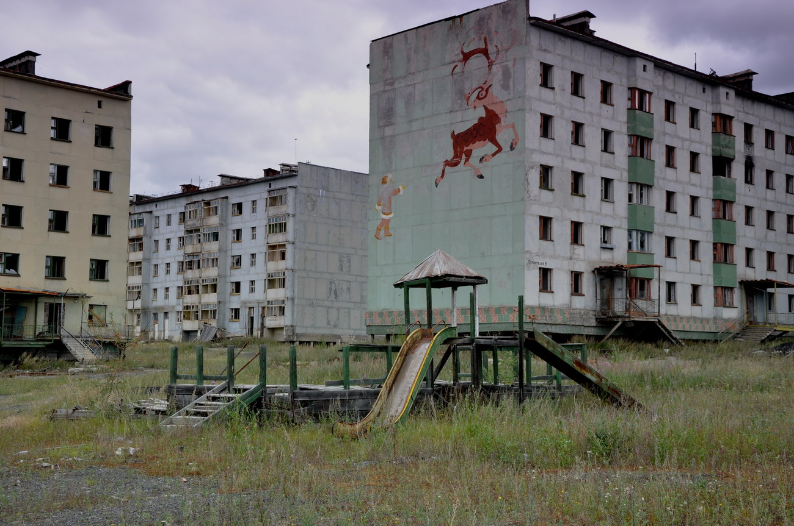

Екскурсії
Топ 5 маловідових місць в Україні

Актівський Канйон
Миколаївська область, Вознесенський район, с. Актове
Актівський каньйон також називають "Каньйоном Диявола" чи "Малим Кримом", оскільки він дуже нагадує Великий Кримський каньйон. З Актовським Каньйоном пов’язана величезна кількість легенд про козаків.Окрім пейзажів, від яких перехоплює подих, тут є унікальний
вид гірських тюльпанів, які ростуть поблизу каньйонузавдяки місцевому мікроклімату. Актовський каньйон знаходиться на території Національного парку "Бузький Гард".

Тараканівський Форт
Рівненська область, Дубенський район, с. Тараканів
Тараканівський форт – це фортеця, яка була зведена у ХІХ ст. з метою укріплення кордонів на заході. Варто зауважити, що форт був самостійною військовою одиницею, яка займала 4 га та мала 7 підземних рівнів. На території фортеці знаходилась хлібопекарня,
морг, пральня, церква, колодязі та багато інших споруд.

Співочі Тераси
Харківська область, Краснокутський район, с. Городнє
На початку ХХ ст. на схилі яру було споруджено п’ять терас, укріплених потужними дугоподібними стінами, з яких були виведені мідні дренажні труби.Акумулюючи тепло, вони створювали своєрідний мікроклімат, що дозволяє вирощувати рідкісні сорти різних плодових
рослин.Оригінальна форма споруди дала також дивовижний акустичний ефект: будь-які звуки посилюються тут в кілька разів.Зараз тут вирощують елітні сорти яблук.

Буйволина ферма
Закарпатська область, Хустський район, с. Гончарово
Поїхати весною та побачити ЩАСЛИВОГО БУЙВОЛА! Адже цей погодній період для них найсприятливіший. Холоду вони бояться, жару нетерплять, а весняна погода – ідеальна. Молоко 12%, мацарелла ну дуже смачна…а це ми ще про згущене молоко не розповідали.

Місто-привид Орбіта
Координати: 49°05′16″ пн. ш.32°45′55″
Подивитися на спустошене місто є багато охочих, але для цього не обов’язково їхати у Прип’ять. Адже в Україні є більш безпечне, дешевше і таке ж безлюдне місто.Орбіта – населений пункт у Чигиринському районі Черкаської області без офіційного статусу.
У 1970 році там почалось будівництво Чигиринської АЕС, і, звісно ж, будівництво містечка для працівників і їхніх родин. Але після Чорнобильської трагедії будівництво скасували, а без робочих місць місто Орбіта швидко спорожніло. Сьогодні
в місці, де мало жити 20 тисяч осіб, проживає всього 120 людей.Орбіти немає на картах і в путівниках, це місто офіційно не існує.